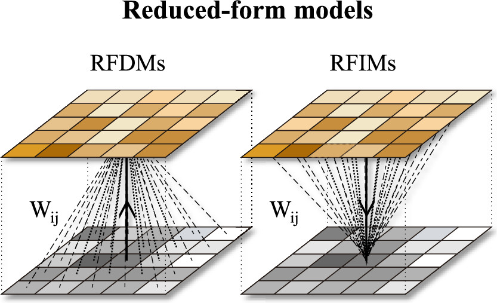

From emissions to air quality to health
Reducing the health burden of air pollution means knowing where pollutants come from, how they become the air people breathe, and what cleaner air is worth. At Peking University, my work in Prof. Shu Tao's group followed that whole chain.
-
Step 1 · Emissions
Emission inventories
Where pollutants come from: global and sector-resolved inventories of black carbon and SO2, and household energy use.
-
Step 2 · Air quality
Air quality modeling
How emissions become concentrations: fast reduced-form models for black carbon, PM2.5 trends separated from meteorology, and indoor PM2.5.
-
Step 3 · Health
Health impacts
What cleaner air is worth: premature deaths avoided by energy transitions, clean heating, siting of coal use, and stricter standards.
1. Emission inventories
Every air quality estimate starts with emissions. I contributed to updated global black carbon emissions from 1960 to 2017, which trace how fuel use and technology shaped emission trends, and to estimates of biomass burning's contribution to global and regional SO2. Work on rural drinking water linked everyday household energy use, such as boiling water, to its fuel demand.
2. Air quality modeling
Full chemical transport models are too expensive to rerun for every emission scenario. Using simulations with WRF-Chem, MOZART-4, and CMAQ, I built direct and inverse reduced-form models for black carbon. The direct model maps emissions to concentrations and the inverse model maps concentrations back to emissions, so the two can be calculated from each other quickly. They also help separate the roles of meteorology and emissions in near-surface concentrations.

Related work showed that PM2.5 reductions in Chinese cities from 2013 to 2019 remain significant once the effect of meteorological conditions is removed, and tested a side-scatter lidar for profiling indoor PM2.5.
3. Health impacts
The last step turns concentrations into exposure and health outcomes. These studies estimated that urban residential energy switching in China between 1980 and 2014 prevented 2.2 million premature deaths, compared clean-heating strategies in northern China, showed that where coal is burned strongly affects its health cost, and assessed the benefits of more rigorous regional air quality standards.
This experience with air pollution and health continues to inform my current work on ozone, which is both a surface pollutant and a climate forcer.
Related publications
- Emissions: Xu et al. (2021) ES&T · Ren et al. (2021) Atmos. Res. · Zhu et al. (2023) ES&T
- Air quality: Yu et al. (2021) ES&T · Zhong et al. (2021) One Earth · Qiu et al. (2019) ES&T Letters
- Health: Zhang et al. (2021) One Earth · Meng et al. (2020) ES&T · Yun et al. (2021) ES&T · Zhang et al. (2023) Earth's Future
- Full citations on the Publications page →